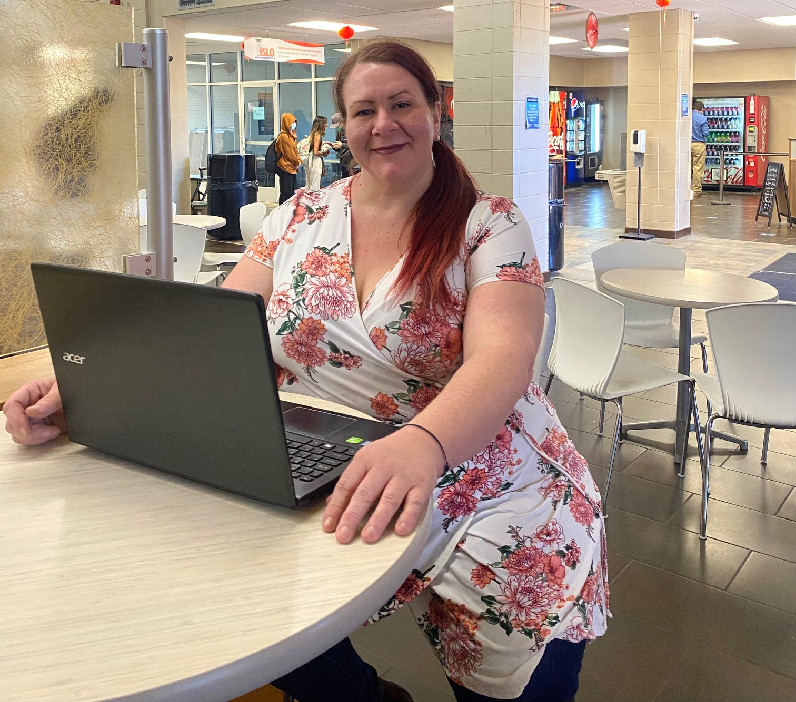

Who is Tasha Rogers?
Tasha Rogers is a native here in the Chattanooga, Tennessee Valley since birth. She attended Hixson middle and High school. she was unable to finish high school she returned to school in 2002 to Chattanooga State and attained her GED. Since than she returned to Chattanooga State in 2014 seeking an Associate of Applies Science degree. Over the years she has took web design for HTML, premiere video editing, powerpoint, and basic computer applications.
